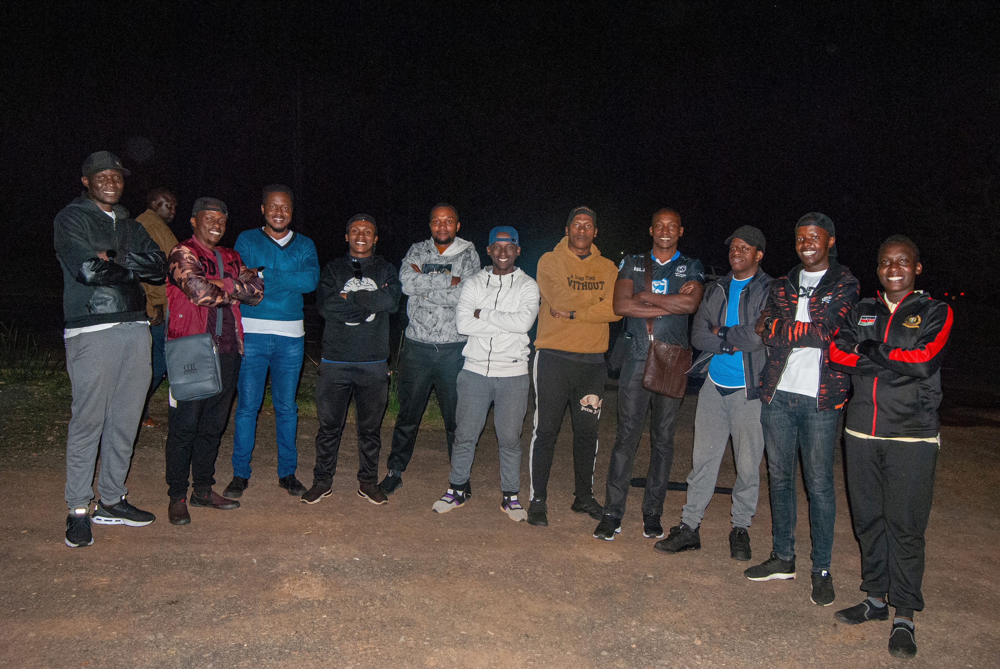

Our purpose is to develop men into passionate disciples for Christ, transitioning from a traditional Men's Ministry to a Ministry "To" Men. We aim to help men discover their God-given purpose and essence of being by addressing their spiritual, emotional, relational, and practical needs through a God-centered yet realistic approach tailored to today's challenges.